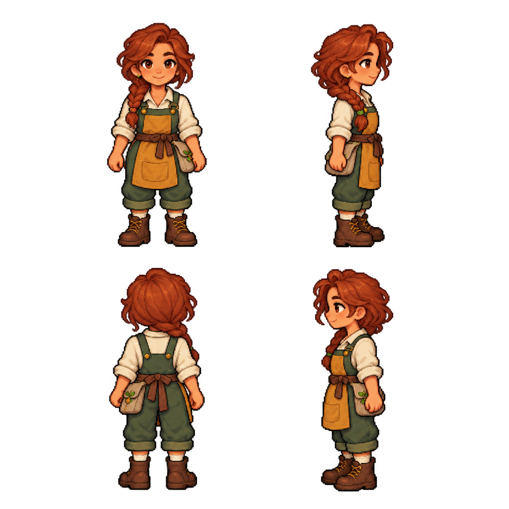
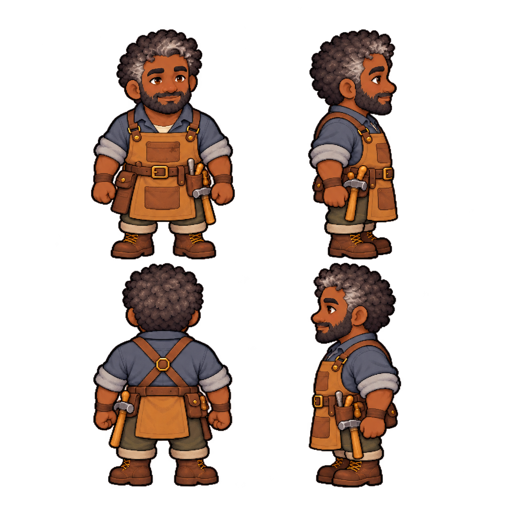
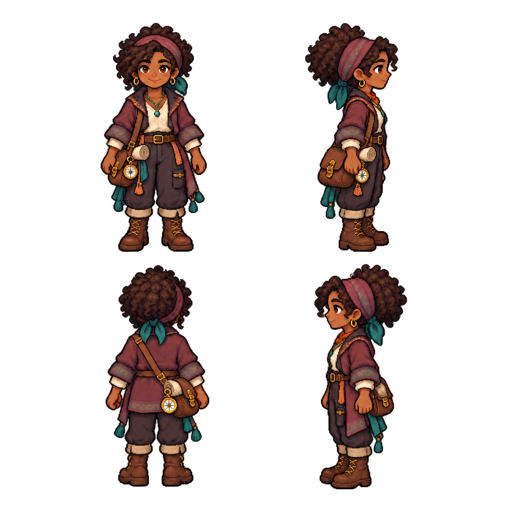
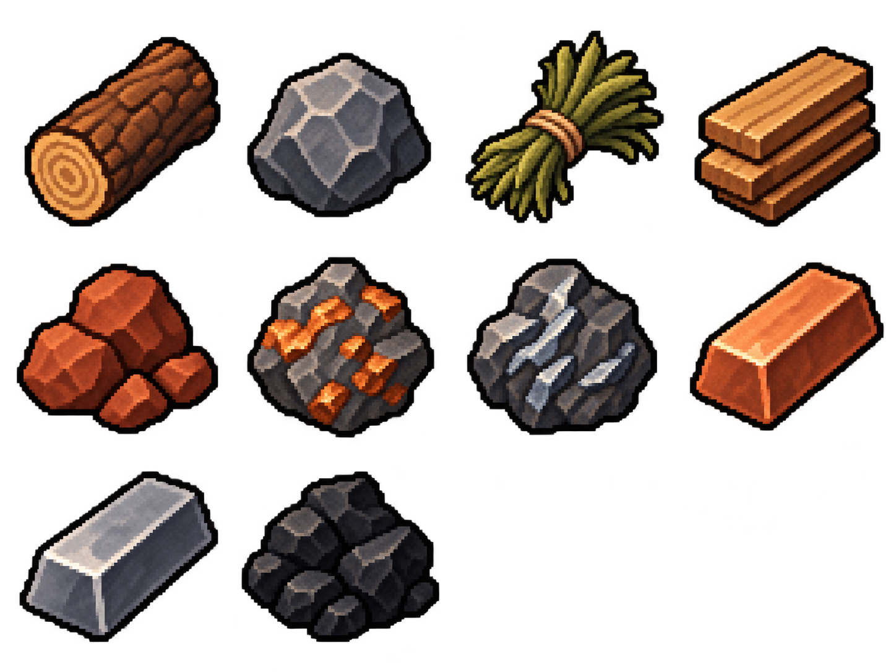
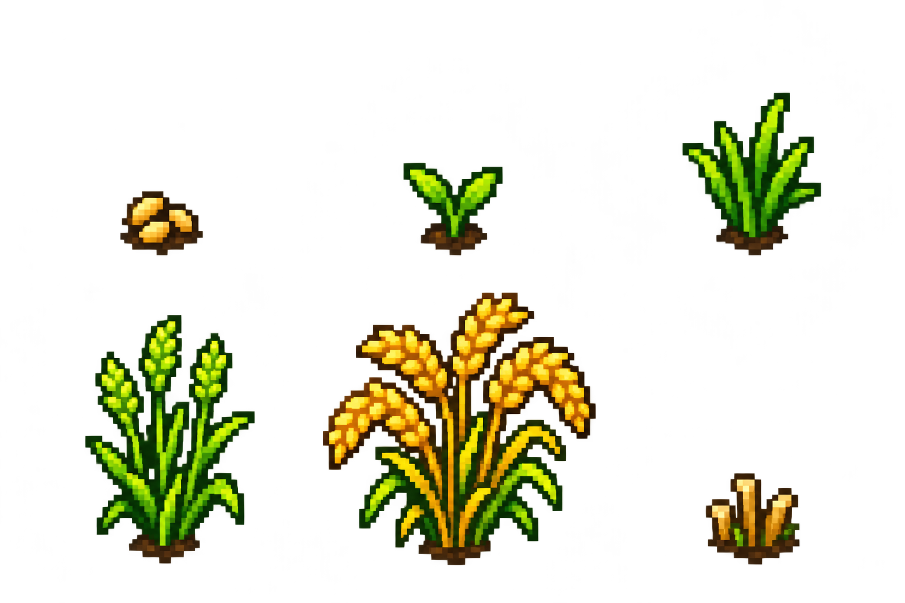
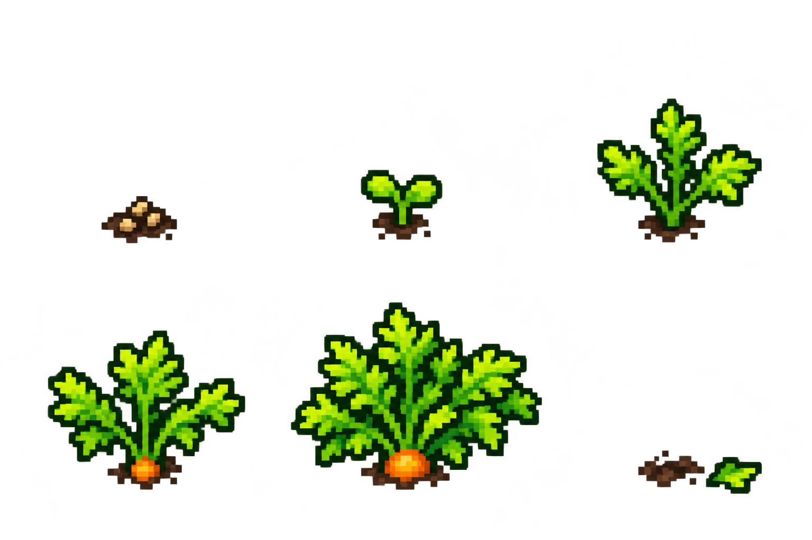
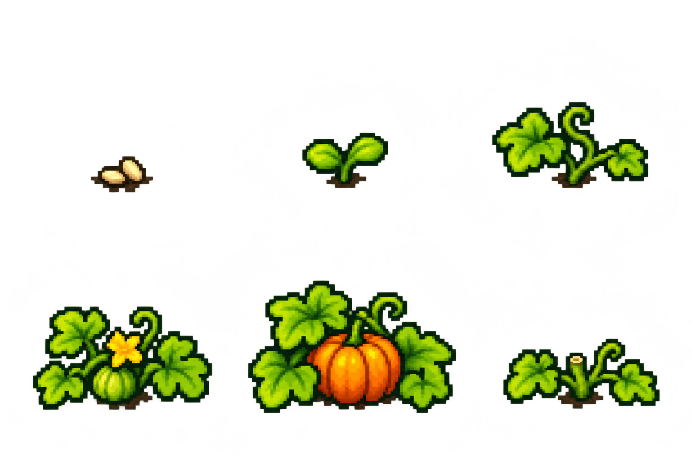

2026-10-22 · 7 张透明图集 · 保留原图与全部生成提示词
沿用已有角色身份与配色，补齐正面、背面、左右侧面。
静态造型，行走与职业动作待制作



新增 10 种。加上上一批 7 种工具，目前已有 17 / 42 个首版图标源图。
背包资源图标，运行尺寸待导出

小麦、胡萝卜、南瓜，各有 6 个状态。种子、幼苗与成熟植株保留大小差异。
六个游戏生长状态，按同一地格尺度设计



人物目标画布为 64 × 64，资源与作物为 32 × 32。此处展示原始大图，仍需裁切、锚点统一、运行尺寸导出及游戏内比例检查。
居民目前是静态方向造型。作物六阶段对应生长和采集状态，不是自动循环动画。前一批主角动作仍有步态和分层修整项。